There are different ways to farm rupees in the game.
The principle of farming is very simple: the more Luck stat you have, the more drops you get. This is why Beast Master is the best class to farm rupees — its skill Harmony of Life allows you to transform into your summoned pet and gain bonus stats, including Luck.
Try taming Unique Humans in the Parallel World dungeon and stage the one you get as a tank pet (it has the highest stats). Then you can summon 2 Wind Pixies S0 Lv160, equipped with 2H Maces + Shield.
| Slot | Item / Pet |
|---|---|
| Main Pet | Human Tank S5 (you can start with an S0 or any pet just to get going) |
| Summons | 2 Wind Pixies Lv160 — for better gear equipment options |
| Helmet | Enhanced Glasses 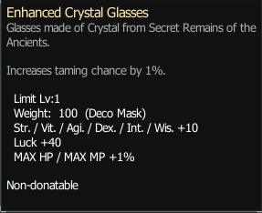 |
| Rings | +40 Luck Rings x2 (droppable at Lake Kaia) |
| Armor Set | Ergon Set — droppable in Ancient Magic Lab (Fanatics) or the stone golems during the master class trials : gives 10% Luck 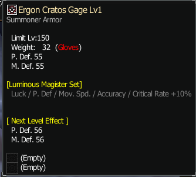 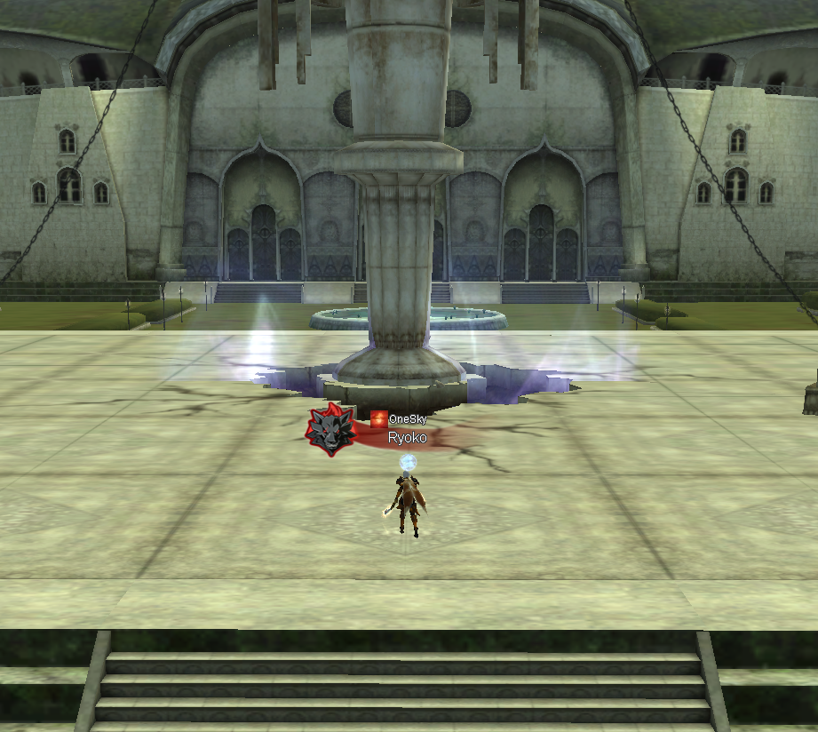 |
| Wings | Luminous Feather (+50 Luck) 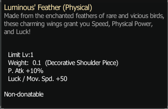 |
| Belt Pets | 2x Snowman S0 Lv90 + 2x Kenta S0 Lv90 |
| Weapons | 2x Royal Axe (dropped in Lost Mines) 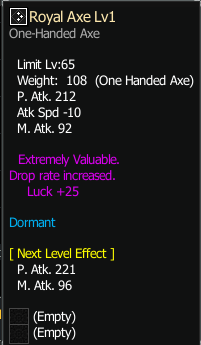 |
| Luck Titles |
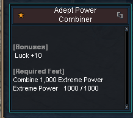 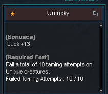 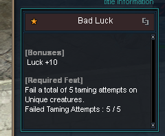 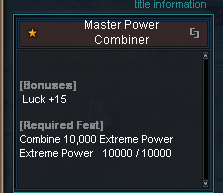 |
| Lucky Potion | 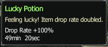 |
| Best Wishes |
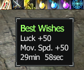 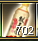 |
| Boss Card | 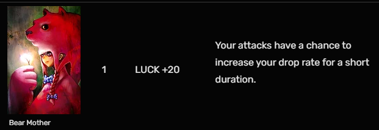 |
| Buff | 5B Buff from other players — provides more stats to you and your pets, including more Luck. You'll earn back the 5B in 2 to 3 hours, then use Refresh Scrolls on yourself and your pets. This step is not mandatory, but I highly recommend it! |
Example of total Luck on BM:
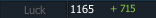
Your Beast Master will be running through mobs — they will keep dying before you even reach them, because the 2 Wind Pixies auto-attack from range. Perma running, no stopping, easier looting.